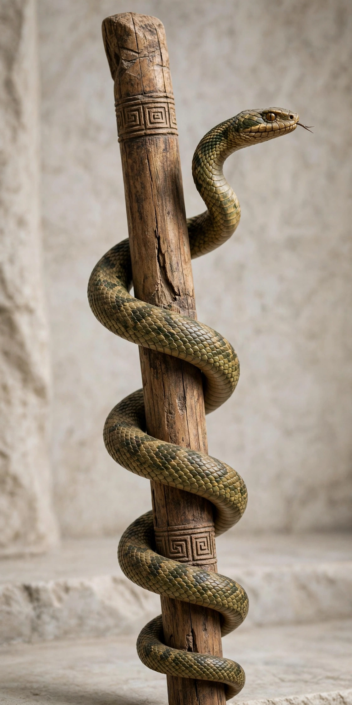

Rod of Asclepius

The Rod of Asclepius is a serpent-entwined staff wielded by Asclepius, the Greek god associated with healing and medicine. In modern times it is the predominant symbol of healthcare, used by organisations including the World Health Organization, which places it at the centre of its emblem, and many national medical associations.
Greek myth and symbolism
Asclepius, son of Apollo, was taught healing by the centaur Chiron and became so skilled that he could restore the dead to life — for which Zeus struck him down. Snakes were sacred to him: they were kept in his healing temples (asclepieia), where the sick underwent incubation (temple sleep). Interpretations of the symbol include the shedding of the snake's skin as renewal, the association of snakes with healing venoms, and a possible reference to the traditional treatment of Guinea worm disease, in which the parasite is slowly wound out on a stick.
Confusion with the caduceus
The rod is often confused with the caduceus of Hermes, which has two snakes and wings and properly symbolises commerce and negotiation. The caduceus is used as a medical emblem in some contexts, notably in the United States, a usage popularised after its adoption by the US Army Medical Corps in 1902, and frequently criticised as an error by classicists and medical bodies.